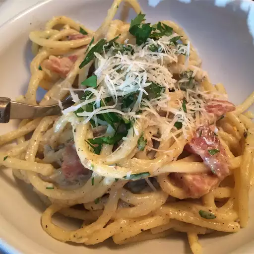

Carbonara Recipe

Description
Carbonara is a pasta dish made with fatty cured pork, eggs, hard cheese, salt, and black pepper.
It is typical of the Lazio region of Italy. The dish took its modern form and name in the middle of
the 20th century. The cheese is usually pecorino romano.
List of Ingredients
- 4 ounces guanciale, cut into 1/4-inch cubes
- 1 tablespoon olive oil
- 1 teaspoon ground black pepper, or to taste
- 2 eggs
- 3 tablespoons grated Parmigiano-Reggiano cheese
- 3 tablespoons grated Pecorino Romano cheese
- 1 teaspoon ground black pepper, or to taste
- 6 ounces spaghetti
- 1 cup reserved pasta water
- 3 tablespoons grated Parmigiano-Reggiano cheese
- 3 tablespoons grated Pecorino Romano cheese
Directions
- Cook guanciale with olive oil and 1 teaspoon ground black pepper in a Dutch oven over medium-low heat until almost crisp, about 5 minutes. Reduce heat to low.
- Whisk eggs, 3 tablespoons Parmigiano-Reggiano cheese, 3 tablespoons Pecorino Romano cheese, and 1 teaspoon ground black pepper in a bowl. Set aside.
- Bring a large pot of lightly salted water to a boil. Cook spaghetti in the boiling water, stirring occasionally until cooked through but firm to the bite, 10 to 12 minutes. Drain, reserving 1 cup of the pasta water.
- Pour reserved pasta water and drained spaghetti into the bacon-pepper mixture; stir to combine.
- Slowly pour egg mixture into the pasta mixture; cook, stirring constantly until the egg mixture forms a thick sauce, 1 to 2 minutes. Remove from heat.
- Stir remaining 3 tablespoons Parmigiano-Reggiano cheese and 3 tablespoons Pecorino Romano cheese into the pasta mixture and serve.